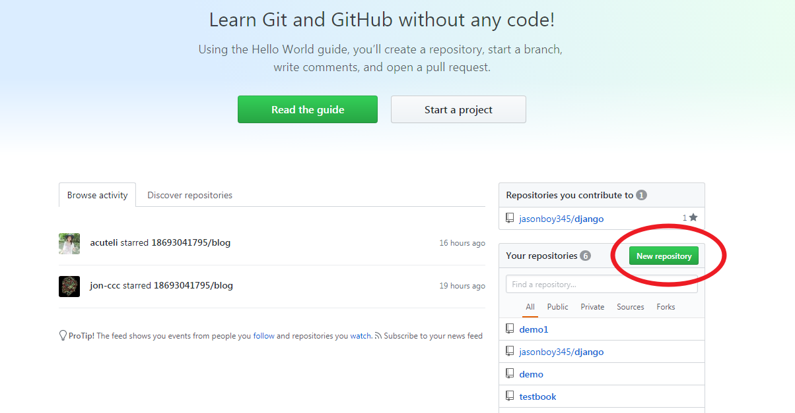
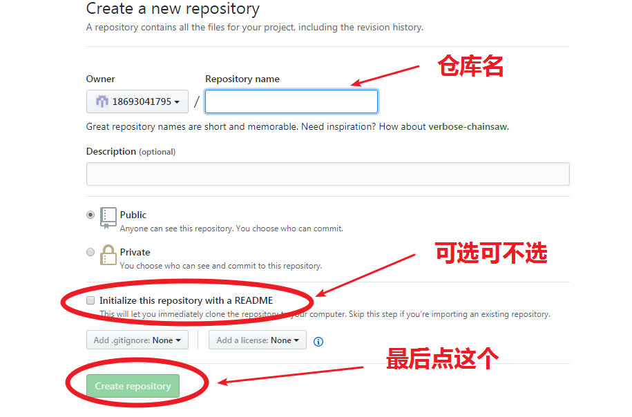
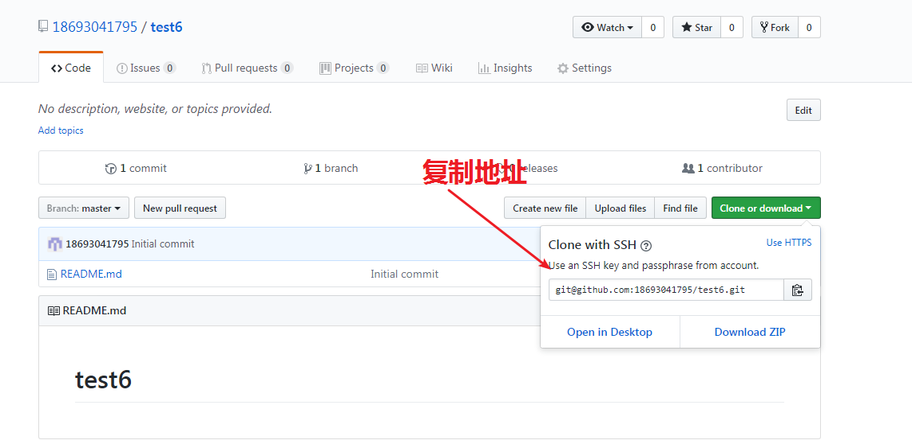
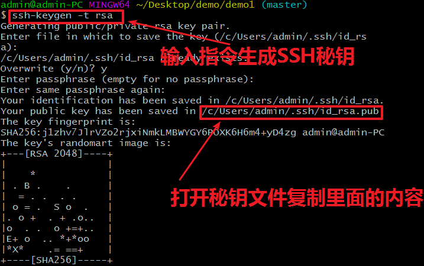
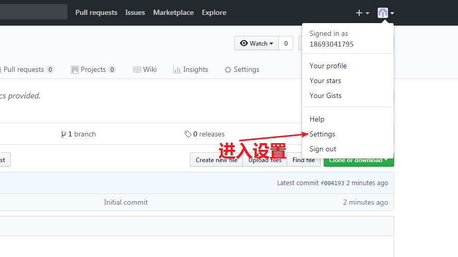
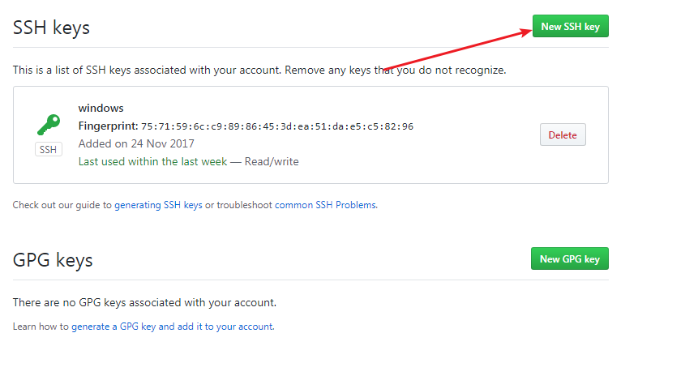
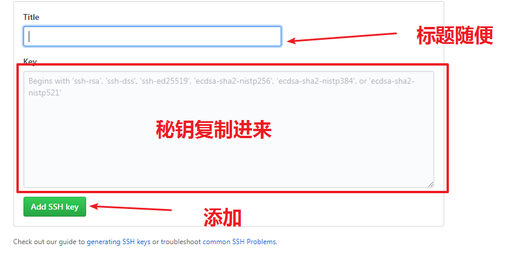

网络编程
0.1.
网络简介
0.2.
Socket
0.3.
HTTP协议
0.4.
socket实现Web服务
0.5.
返回一个HTML页面
0.6.
添加路由功能
0.7.
添加404反馈功能
0.8.
完整代码
1.
Git
1.1.
Git的基本使用
1.2.
GitHub创建远程仓库
Published with GitBook
本章节的学习目标
GitHub创建代码仓库，并添加本地Git连接
1.

2.

3.

4.

5.

6.
7.

8.
